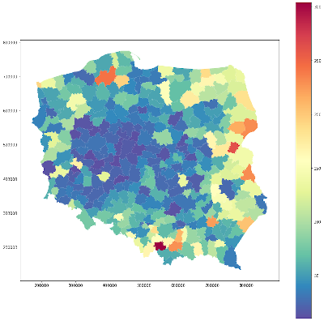
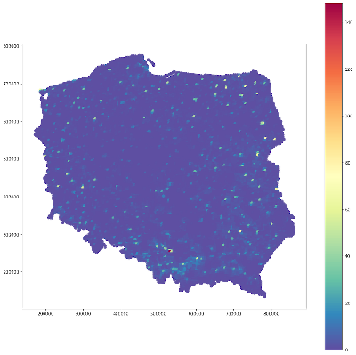

Introduction¶
PyInterpolate is designed as the Python library for geostatistics. It’s role is to provide access to spatial statistics tools used in a wide range of studies. If you’re:
GIS expert,
geologist,
mining engineer,
ecologist,
public health specialist,
data scientist.
Then this package may be useful for you. You could use it for:
spatial interpolation and spatial prediction,
alone or with machine learning libraries,
for point and areal datasets.
Package was tested in commercial and research projects:
Tick-borne Disease Detector (prediction of areas of infection risk), research project funded by the European Space Agency,
commercial project related to the prediction of demand for specific flu medications,
commercial project related to the large-scale infrastructure maintenance.
Pyinterpolate allows you to perform:
Ordinary Kriging and Simple Kriging (spatial interpolation from points),
Centroid-based Kriging of Polygons (spatial interpolation from blocks and areas),
Area-to-area and Area-to-point Poisson Kriging of Polygons (spatial interpolation and data deconvolution from areas to points).
The example how Area-to-point Poisson Kriging works with epidemiological data. Top figure shows disease rates over areas and bottom figure shows exact population at risk.
Before deconvolution - our variable is aggregated over large area, it’s hard to decide how to deal with it:

After deconvolution - our variable is deconvoluted based on the relation to the process at a finer grid:

The best way of learning is to follow tutorials, but you may read full documentation of the package or try to experiment alone.